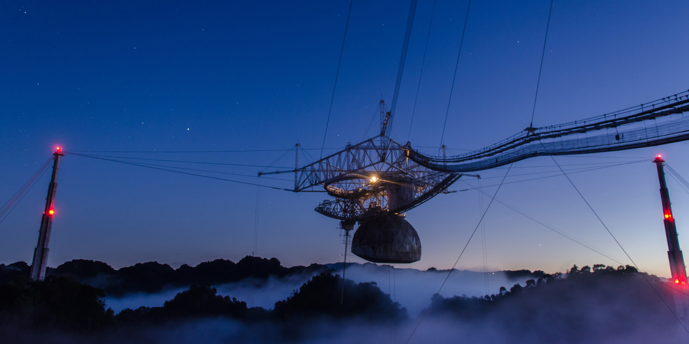

About Me
I am an undergraduate physics and philosophy student at the University of Puerto Rico
Río Piedras Campus, interested in observational astronomy and the philosophy of physics.
I work at the Planetary Habitability Laboratory of the University of Puerto Rico at Arecibo
as a student researcher in radio astronomy, as well as at the Department of Philosophy of the
University of Puerto Rico Río Piedras Campus as a research fellow in the philosophy of
astronomy and physics.
Research

Arecibo REDS: The Stellar Activity of Stars with Potentially Habitable Planets
The stellar activity of red dwarf stars is of particular interest due to their potential to host
habitable planets around them. These planets could experience atmospheric erosion and be rendered
inhabitable if subject to frequent flaring activity; this activity is associated with detectable
radio emissions. We exploit the sensitivity of the Arecibo Observatory radio telescope to observe
nearby red dwarf stars with potentially habitable planets and study their flaring activity.
As a member of Arecibo REDS, I plan observing sessions and carry them out on-site, and reduce and
analyze data.
You can read more about it here!
N-body Simulations of a Warm Jupiter Near Resonance with a Sub-Neptune
While very few hot Jupiters are known to have nearby planetary companions, warm
Jupiters with nearby small planets are much more common. Our team found an interesting
case of a warm Jupiter near resonance with an outer sub-Neptune. To further explore the
behavior of this configuration, I am programming dynamical simulations of this system to
test its stability and evolution. So far, I have found that the system can be stable within
the known constraints set by Kepler and radial velocity data, but I rule out many configurations
with high eccentricities (>0.15) or mutual inclinations (>5 degrees).
Check out my presentation below to learn more!
Models of Data in Astronomical Interferometry
On April 10, 2019, the Event Horizon Telescope team released their groundbreaking image of the
black hole Messier 87*. On what grounds do we conceive of this and other synthesized results of
astronomical interferometry as legitimate ‘pictures’, and what does it mean to say we ‘saw’ the
shadow of the black hole? In this project, I examine the tools and models modern philosophy can
provide to examine this and other astronomical results obtained through interferometry. Particularly,
I am constructing a data model for interferometric images, and exploring what recent work in the
philosophy of perception and the philosophy of shadows can tell us to inform how to most faithfully
communicate and present findings obtained through interferometry.
Radio OH Observations of the First Interstellar Comet 2I/Borisov
Comet 2I/Borisov was first observed September 8, 2019 and was quickly identified as originating from
outside the Solar System due to its highly eccentric, hyperbolic orbit. This is the first interstellar
comet to be discovered so far. Radio observations of comets have been successfully performed since 1973,
when comet C/1973 E1 (Kohoutek) was observed in search of the hydroxyl (OH) radical in the comet’s coma;
the OH radical is a photodissociation product of water and can be used to quantify the water production
of the comet. Using the Arecibo Observatory, we observed 2I/Borisov over the course of its passage
through the northern sky, looking for this same OH signal. Though the campaign resulted in a non-detection,
our results are consistent with observations at other wavelengths, and future work includes obtaining
upper limits on water production from our data.
You can read more about it here!
Contact
Email: kevin.ortiz22@upr.edu
Mailing Address: P.O. Box 50816, Toa Baja, PR 00950-0816
Work Address:
Planetary Habitability Laboratory | phl.upr.edu
University of Puerto Rico at Arecibo
Carr. 653 Km. 0.8 Sector Las Dunas
Arecibo, PR 00613